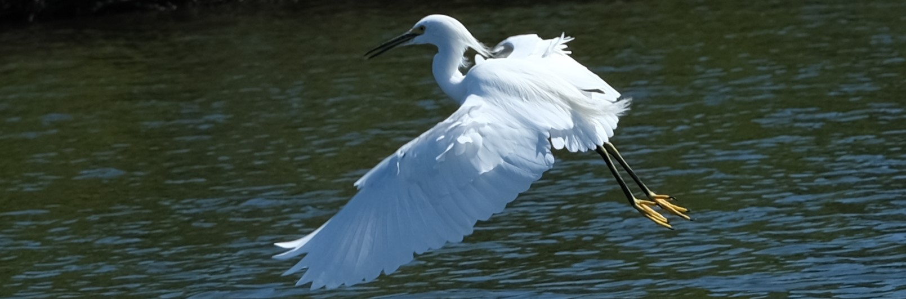

SQL and Tableau Data analysis project:
Bird observations in French marine protective areas
In this data analysis project I looked at the open source dataset on the bird observation events recorded by the French bird protection association (LPO). The dataset contains records of different animals (birds, molluscs etc) observed in natural marine protective areas at the northern and western coast of France (Côtes-d'Armor, Charente-Maritime and Vendée regions).
The goal of this project was to get a clear idea about the bird observation events recorded. The questions I was asking myself were, for example, how many different bird species were observed in each of the four different locations of the protected area? Which month of the year is the best to observe birds? What are the most frequently observed bird species? How does bird counting evolved over the last fourty years?
The relevant information had to be extracted from the dataset and extensively cleaned up. All these steps were gone using SQL. For example, the following code allowed to create a new dataset contaning only relevant information and selecting only bird species among all the animals observed:

The cleaned up data was then ready for analysis. With SQL I was able to make calculations and finally get answers to my questions. The full SQL code can be viewed